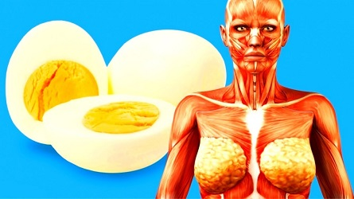

BENEFÍCIOS DO OVO VÃO MUITO ALÉM DO DESENVOLVIMENTO MUSCULAR
Quem acha que o ovo é o vilão da dieta está completamente enganado. O produto de origem animal é, na verdade, o grande trunfo para ganhar músculos além de garantir outros benefícios para o organismo.
Ver mais➤
Ovo não aumenta taxas de colesterol e ajuda a perder peso.
Nos últimos anos, o ovo vem sendo objeto de uma reabilitação poucas vezes vista na história da Medicina. Até mesmo os cardiologistas mais radicais, aqueles que demonizaram os ovos como os maiores vilões da saúde do coração, começam a rever suas posições.
Ver mais➤

Ovo: benefícios, propriedades, como e quanto consumir?
Ele já foi considerado vilão, mas hoje é um alimento muito recomendado pelos nutricionistas. O ovo é um alimento de origem animal rico em p roteínas, vitaminas e mineiras.
Ver mais➤
